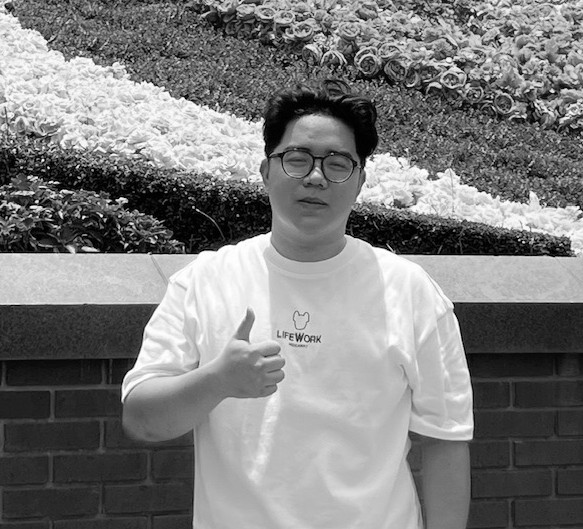

Building worlds
across every
medium.
William Wei is a Jakarta-based creative generalist — animator, 3D artist, illustrator, photographer, and art director — who has spent his career refusing to be defined by a single discipline. His work spans concept art, environment design, 3D, motion graphics, VFX, photography, and sound, unified by a persistent curiosity and a drive to build things with depth and story.
It started early. Growing up, art was always there — first as instinct, then as craft. High school brought digital illustration and graphic design, then a camera, then video. By university he was studying animation in its full breadth at Universitas Multimedia Nusantara — from concept art to motion graphics to VFX — before a final-year thesis project with a handpicked team of specialists pushed him deep into 3D.
He has been there since — professionally at Ape Plus Studio, and personally, still figuring out what comes next. The path has felt like soul searching at times. That part is still ongoing. What is clear is that the range itself is the asset: a generalist's instinct for the whole picture, sharpened by real production experience, and a quiet history of leading teams that goes back to university.

William Wei
Jakarta, Indonesia
Open to remote opportunities, freelance projects, and studio roles.
Working as a 3D generalist in a professional studio environment, applying a broad technical skillset across production pipelines while developing fluency in environment and asset work.
Taught a semester of animation as an extracurricular subject, translating professional production knowledge into an accessible curriculum for students.
Taught conversational English to Japanese students on a remote tutoring platform while completing a university degree, developing cross-cultural communication skills.
Studied the full breadth of animation — concept art, motion graphics, VFX, and 3D. Final year: joined a thesis "superteam" of top students from across disciplines, taking on art direction and producer responsibilities for the group project.
First foray into digital art — creating visuals for the school basketball team, which sparked a self-taught path through illustration, graphic design, photography, and video.
He has a versatile set of skills and knows that, paired with his leadership instincts, he can be a strong asset for any team — anywhere.